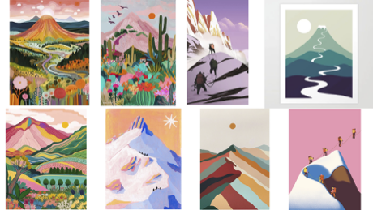

class: center, middle <!-- In deze textarea kan je in Markdown de slides aanpassen, zie https://github.com/gnab/remark/wiki voor alle mogelijkheden! --> # Inspiratie voor de digital garden van Sophia --- # Agenda 1. Onderwerp 2. 10 links 3. 50 afbeeldingen 4. ...(max 11 slides, 15 totaal) 5. introtekst van max. 180 tekens --- # Bergen Hike, klim, boulder, ski, snowboard, canyoning en nog veel meer. Respecteer de natuur en bescherm deze bijzondere landschapen. --- # 10 links Activiteiten die in de natuur gedaan kunnen worden https://www.valloire.net/en/blog/10-activites-montagne-ete/ Vrienden maken in de bergen https://asac.nl/ https://www.derm.nl/ Top 10 hike bergen https://www.responsibletravel.com/holidays/walking/travel-guide/top-10-mountains-to-climb Top 10 hoogste bergen https://extremeguide.pro/en/blogs-en/the-world-s-highest-mountains-top-10-stunning-peaks/ Snowboard tips https://www.dopesnow.com/nl/mag/leren-snowboarden/?srsltid=AfmBOopjuYcrNHJjnKWUIvwJtgqExpc_s8k-aQ04qZCcV45KG6BSceC- Wat is boulderen https://www.boulderbrighton.com/what-is-bouldering Wat is canyoning https://www.annecy-aventure.com/en/what-is-canyoning Wild kamperen https://map.campwild.org/ https://ohwhataknight.co.uk/blog/beginners-guide-to-wildcamping --- <p></p> --- <img src="foto1 kopie.jpg" width="100%"> --- <img src="foto2 kopie.jpg" width="100%"> --- <img src="foto3 kopie.jpg" width="100%"> <!-- Laat onderstaande staan anders breekt je presentatie -->